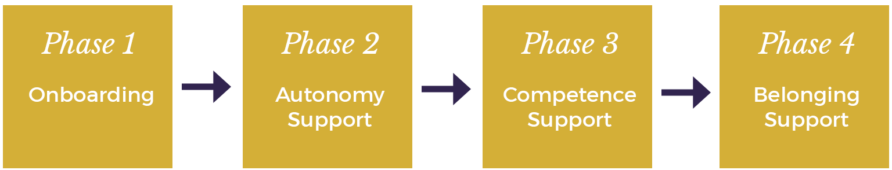

The Mission
In 2014, Omar teamed up with Habitry co-founders Steven M. Ledbetter and Vanessa Naylon to work on our mission of "helping the most people to help the most people" by making products for health coaches.
After launching Habitry iOS, coaches began to ask Habitry for a more comprehensive education product that would allow them to bring the behavioral psychology techniques they had been introduced to in the iOS app into real world settings.
This is the story of how Omar made Essentials of Habit Coaching, the core feature of Habitry Professionals.

A Learning Design Problem
Thanks to Motivation and Behavior Change Science, we've known how to help people change their behavior for over 40 years.
Yet the practical know-how from this vast evidence base has remained out of the reach of coaching professionals.
Because building coaching competence takes time, resources, and a high-touch, costly approach. So the coaching industry remains filled with quackery, employee disengagement, and turnover.
What if there was a way to scale an engaging and evidence-based learning experience for coaches?

The Approach
As with Habitry iOS and Habitry Professionals, Habitry took a Lean UX approach to figuring out potential customer pain points, testing potential solutions, and evaluating our ongoing efforts to iterate rapidly toward the right product. This meant getting a MVP prototype in front of users ASAP, watching them use it, and refining the product with each round of customer interaction to drive improvements in product quality.
We leaned heavily on the approach to Learning Design developed by Julie Dirksen and the Lens of Intrinsic Skill Atoms developed by Sebastian Deterding.
Discovery
On the advice of Angel Investor Jesse Robbins, Habitry started a series of Unconferences — The Motivate Summits. These open, unscripted gatherings proved to be a fertile ground for exploring the non-technical approaches that health coaches were using, and the great lengths to which they were going to scale their businesses into "the other 167 hours" a week they were not with their clients.
Once Habitry had customers using Habitry iOS, we also brought in those customers for interviews. These interviews highlighted gaps between between the skills they had and wanted to learn, and their learning experiences with the solutions they were already using to improve their coaching skills.
Ideation
Defining Requirements
Using notes from the Discovery process, we developed personas of both coaches and clients to guide us through the ideation process. This customer development work suggested some features that we validated against the work done by researcher and intervention designer Johnmarshall Reeve.
| Features |
| Deliver a hyper practical training experience across multiple sessions |
| Allow the instructor to provide ongoing support at scale |
| Guide coaches on dealing with challenging scenarios and conversations |
| Fill the feedback vacuum coaches find themselves in. |
| Include group discussions so students could share questions and comments with peers |
| Provide evidence-based, actionable, engaging content |
Motivating User Behavior
Next we conducted a behavioral analysis to examine barriers and opportunities to motivate coaches to take action to build their skills. The diagram below was inspired by Dustin DiTomasso and Amy Bucher of mad*pow.

| PSYCHOLOGICAL CAPABILITY | Coaches needed support with knowledge, skill, memory, attention, and decision-making to motivate behavior change in clients. |
| PHYSICAL CAPABILITY | — |
| REFLECTIVE MOTIVATION | Coaches needed motivating process goals, a boost in confidence in their capabilities, and rationales for why the Essentials habits should be adopted by them. |
| AUTOMATIC MOTIVATION | Coaches needed help forming the habit of checking in with their team. |
| PHYSICAL OPPORTUNITY | Coaches a program that fit into their busy lifestyle and schedule. | SOCIAL OPPORTUNITY | Coaches needed empathy for the challenges they faced while helping clients. |
Design Tactics
We aimed to increase Capability, Motivation, and Opportunity by selecting appropriate Behavior Change Techniques.

Improving Capability
We improved Capability by targeting Knowledge, Skills, Memory, and Decision-Making processes. We provided information on how to support client habit formation and motivation and how to practice the skills of coaching.
We used the Behavior Change Techniques of Goals-Setting, Action Planning, Behavioral Contracts, Shaping Knowledge, Demonstration of Behavior, and Self-Monitoring of Behavior.

Improving Motivation
We improved motivation by targeting Goals, Beliefs about Capabilities, Optimism, and Professional Identity.
We supported coach Autonomy with the provision of Meaningful Choice, Rationales, and Avoidance of Control.
We supported coach Competence by Clarifying Expectations, providing Optimal Challenge, and giving Meaningful Feedback.

Improving Opportunity
We improved Opportunity by targeting Environmental Restructuring. We used the Behavior Change Techniques of Prompts/Cues, Covert Learning, Valued Self-Identity, and Social Support.
We create performance aids to support practice while coaches were with peers and clients. We also supported Relatedness by creating a community with ongoing Connection, Collaboration, and Compassion from peers.
A Coach's Learning Journey through Essentials
There were four phases to the Essentials program.
Phase 1
Introductions & Onboarding
During this phase, coaches were introduced to their instructor and peers, and guided to share their learning goals with the group. Then they received instruction on the practical applications of Self-Determination Theory, Motivational Interviewing, the Dual-Process Model of Habit Formation.
Phase 2
Habits of Autonomy Support
During this phase, coaches received daily instruction and feedback on providing Autonomy Support. Coaches ended this phase with improved ability to help clients make meaningful choices.
| Habit 1 | Open-Ended Questions |
| Level 1 | Ask an open-ended question |
| Level 2 | Get clients interested in their own experience |
| Level 3 | Help clients notice their personal values |
| Habit 2 | Reflective Listening Statements |
| Level 1 | Paraphrase one word your client said |
| Level 2 | Paraphrase motivations |
| Level 3 | Paraphrase negative emotions |
Phase 3
Habits of Competence Support
Coaches received daily instruction and feedback on providing Competence Support. Coaches ended this phase with improved ability to help clients feel more successful.
| Habit 1 | Client Habit Design |
| Level 1 | Writing Habit Statements |
| Level 2 | Goldilocksing (creating optimal challenge) |
| Level 3 | Designing Core Habits |
| Habit 2 | Motivational Feedback |
| Level 1 | Give an unexpected compliment |
| Level 2 | Give informational feedback on the process |
| Level 3 | Give developmental feedback |
Phase 4
Habits of Belonging Support
Coaches received daily instruction and feedback on providing Belonging Support to clients. Coaches ended this phase with improved ability to help clients feel valued and included in a community.
| Habit 1 | Create Connection |
| Level 1 | Introduce your clients to each other |
| Level 2 | Invite clients to share reflections with each other |
| Level 3 | Invite clients to teach each other |
| Habit 2 | Foster Psychological Safety |
| Level 1 | Share a story about how you learned from failure |
| Level 2 | Show clients how to ask for support from the group |
| Level 3 | Have a crucial conversation with someone violating your community values |
The Product
Results
In 2016, Habitry sold Essentials of Habit Coaching as part of Habitry Professionals to Lift the Bar in the UK. It is now the largest, evidence-based behavior change education system in the UK and part of the largest experiment in autonomy-supportive education in the world.